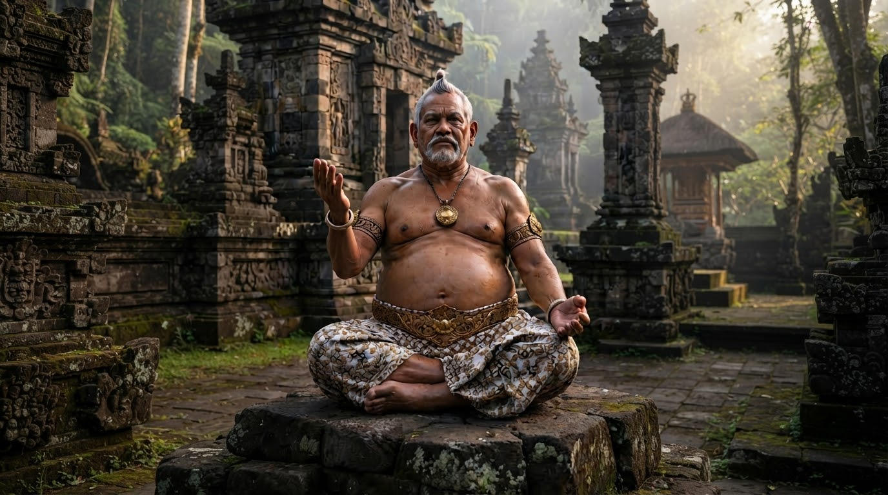

AKTIVITAS KESADARAN DALAM KAWRUH UTTAMOPADESA

1. Pendahuluan.
Manusia menjalani kehidupan melalui berbagai aktivitas yang melibatkan pengamatan, ingatan, pemikiran, perasaan, kehendak, dan tindakan. Seluruh aktivitas tersebut saling berkaitan dalam proses manusia mengenali keadaan, memahami pengalaman, menghayati kehidupan, menentukan kehendak, dan mengambil tindakan.
Aktivitas tersebut dapat dikenali melalui pengalaman serta manifestasinya dalam kehidupan. Namun, kemampuan mengenali dan menguraikan aktivitas Kesadaran tidak serta-merta menjawab pertanyaan mengenai hakikat Kesadaran dan unsur-unsur hakiki yang membentuknya. Menjelaskan bagaimana suatu aktivitas berlangsung berbeda dari mengetahui secara menyeluruh hakikat yang memungkinkan aktivitas tersebut terjadi.
Dalam Kawruh Uttamopadesa, pembedaan ini menjadi landasan perumusan aktivitas Kesadaran. Pembahasan diarahkan pada aktivitas yang dapat dikenali melalui kehidupan manusia tanpa menetapkan secara spekulatif unsur-unsur hakiki Kesadaran yang belum dapat dipastikan.
Kerangka tersebut dirumuskan melalui Sapta Obahing Cipta, Sapta Obahing Rasa, dan Sapta Obahing Karsa. Ketiganya merupakan tiga ranah aktivitas yang saling berkaitan untuk memahami manifestasi Kesadaran dalam kehidupan manusia.
2. Landasan Pemikiran.
2.1. Aktivitas dan Hakikat Kesadaran.
Pengamatan, ingatan, pemikiran, penghayatan, dan kehendak merupakan aktivitas yang dapat dikenali melalui pengalaman manusia. Akan tetapi, pengenalan terhadap aktivitas tersebut tidak berarti bahwa hakikat Kesadaran telah diketahui secara menyeluruh.
Kawruh Uttamopadesa membedakan uraian mengenai aktivitas Kesadaran dari penetapan mengenai unsur-unsur hakikinya. Pendekatan ini bukan penolakan terhadap upaya memahami Kesadaran, melainkan penegasan mengenai batas antara hal yang dapat dirumuskan berdasarkan manifestasinya dan hal yang belum dapat dipastikan hakikatnya.
Dengan demikian, pembahasan aktivitas Kesadaran berfokus pada pengenalan, penghayatan, kehendak, dan tindakan sebagaimana berlangsung dalam kehidupan manusia.
2.2. Cipta, Rasa, dan Karsa.
Cipta, Rasa, dan Karsa merupakan tiga ranah aktivitas yang digunakan untuk memahami kehidupan manusia secara menyeluruh.
Cipta berkaitan dengan aktivitas mencermati, mengingat, membayangkan, memikirkan, mempertimbangkan, membedakan, dan memahami sesuatu.
Rasa berkaitan dengan aktivitas merasakan, menghayati pengalaman, mengenali keadaan diri, serta mengembangkan kasih, belas kasih, dan tenggang rasa terhadap sesama.
Karsa berkaitan dengan munculnya kehendak, penetapan tujuan, peneguhan tekad, pemilihan tindakan, pengupayaan, perwujudan, dan ketekunan.
Ketiganya bukan bagian-bagian yang sepenuhnya terpisah. Cipta memberikan ruang pengenalan dan pemahaman, Rasa menghadirkan penghayatan dan kepekaan, sedangkan Karsa mengarahkan kehendak menuju tindakan nyata.
2.3. Metode Perumusan.
Pembahasan ini menggunakan pendekatan konseptual-deskriptif dengan menguraikan pengertian, cakupan, dan keterkaitan setiap aktivitas.
Tujuannya adalah menyusun kerangka yang sistematis untuk memahami aktivitas Kesadaran dalam kehidupan manusia, bukan menetapkan komposisi metafisik Kesadaran atau mengklaim pembuktian eksperimental.
3. Sapta Obahing Cipta.
Sapta Obahing Cipta merupakan rumusan tujuh aktivitas Cipta yang memperlihatkan bahwa Cipta tidak hanya terbatas pada kegiatan berpikir. Aspek Cipta juga meliputi proses-proses :
3.1. Pengamatan, yaitu aktivitas mencermati keadaan, peristiwa, atau objek yang dihadapi.
3.2. Ingatan, yaitu aktivitas menghadirkan kembali pengalaman atau pengetahuan yang pernah diperoleh.
3.3. Imajinasi, yaitu aktivitas membentuk gambaran mengenai keadaan, kemungkinan, atau sesuatu yang belum diwujudkan.
3.4. Pemikiran, yaitu aktivitas mengolah informasi, pengalaman, dan gambaran untuk memperoleh pemahaman.
3.5. Pertimbangan, yaitu aktivitas menelaah makna, kemungkinan, dan konsekuensi sebelum menentukan keputusan.
3.6. Pembedaan, yaitu aktivitas mengenali perbedaan serta memilah sesuatu berdasarkan ciri-cirinya.
3.7. Pemahaman, yaitu aktivitas menangkap makna dan hubungan dari sesuatu yang dicermati.
Ketujuh aktivitas tersebut menunjukkan keluasan Cipta dalam kehidupan manusia. Cipta tidak hanya berkaitan dengan proses berpikir, tetapi juga dengan pengenalan dan pengolahan pengalaman untuk memahami keadaan yang dihadapi.
4. Sapta Obahing Rasa.
Sapta Obahing Rasa merupakan rumusan tujuh aktivitas Rasa yang berkaitan dengan pengalaman, penghayatan batin, dan kepekaan terhadap kehidupan. Sapta Obahing Rasa, meliputi aktivitas :
4.1. Merasakan, yaitu mengalami keadaan atau peristiwa yang hadir dalam kehidupan.
4.2. Menghayati, yaitu meresapi makna pengalaman sehingga tidak sekadar diketahui, tetapi juga dialami secara batin.
4.3. Menyadari keadaan diri, yaitu mengenali keadaan diri sendiri, termasuk pengalaman dan keadaan batin yang sedang berlangsung.
4.4. Merasakan penderitaan orang lain, yaitu mengembangkan kepekaan terhadap penderitaan yang dialami sesama.
4.5. Mengasihi, yaitu mengalami dan menumbuhkan kasih terhadap sesama dan kehidupan.
4.6. Berbelas kasih, yaitu merasakan keprihatinan terhadap penderitaan orang lain yang disertai kasih dan kepedulian.
4.7. Tenggang rasa, yaitu memperhatikan keadaan dan perasaan orang lain dalam menjalani kehidupan bersama.
Ketujuh aktivitas tersebut menunjukkan bahwa Rasa tidak terbatas pada pengalaman pribadi. Rasa juga berkaitan dengan penghayatan, kepedulian, dan kepekaan terhadap keadaan sesama.
Merasakan penderitaan orang lain, berbelas kasih, dan tenggang rasa memiliki keterkaitan, tetapi penekanannya berbeda.
Merasakan penderitaan berpusat pada kepekaan terhadap pengalaman sesama, berbelas kasih menekankan keprihatinan yang disertai kasih, sedangkan tenggang rasa menekankan perhatian terhadap keadaan dan perasaan orang lain.
5. Sapta Obahing Karsa.
Sapta Obahing Karsa merupakan rumusan tujuh aktivitas Karsa yang menggambarkan gerak kehendak menuju tindakan nyata, meliputi aktivitas :
5.1. Menghendaki, yaitu munculnya kehendak yang berkaitan dengan sesuatu yang dipahami dan dihayati.
5.2. Menetapkan tujuan, yaitu menentukan sesuatu yang hendak diwujudkan sebagai arah pelaksanaan kehendak.
5.3. Meneguhkan tekad, yaitu menguatkan kesungguhan untuk mencapai tujuan yang telah ditetapkan.
5.4. Memilih tindakan, yaitu menentukan tindakan yang sesuai untuk mewujudkan kehendak.
5.5. Mengupayakan, yaitu mengerahkan usaha secara nyata untuk mencapai tujuan.
5.6. Mewujudkan, yaitu melaksanakan kehendak sehingga memperoleh bentuk nyata dalam kehidupan.
5.7. Bertekun, yaitu mempertahankan kesungguhan, memperbaiki pelaksanaan, dan menyempurnakan hasil melalui usaha berkelanjutan.
Ketujuh aktivitas tersebut menunjukkan bahwa Karsa tidak berhenti pada keinginan. Karsa bergerak dari munculnya kehendak menuju penentuan arah, pelaksanaan tindakan, dan ketekunan dalam mewujudkannya.
Melalui Karsa, sesuatu yang dipahami dan dihayati dapat diarahkan menjadi tindakan nyata. Namun, pelaksanaan kehendak tetap memerlukan keterkaitan dengan pemahaman dan kepekaan terhadap keadaan yang dihadapi.
6. Hubungan Cipta, Rasa, dan Karsa.
Sapta Obahing Cipta, Sapta Obahing Rasa, dan Sapta Obahing Karsa merupakan satu kerangka konseptual yang saling berkaitan. Ketiganya tidak dimaksudkan sebagai tiga rangkaian yang selalu berlangsung secara berurutan dan terpisah.
Sebagai contoh, ketika seseorang melihat penderitaan orang lain, Cipta mencermati dan memahami keadaan tersebut. Rasa menghadirkan kepekaan terhadap penderitaan yang dialami. Karsa kemudian dapat menggerakkan kehendak untuk membantu, menentukan tindakan, melaksanakan pertolongan, dan bertekun dalam upaya yang dilakukan.
Dalam kehidupan nyata, hubungan ketiganya dapat berlangsung secara bersamaan dan saling mempengaruhi. Tindakan yang dilakukan dapat menghasilkan pengalaman baru bagi Cipta dan Rasa, sementara pengalaman tersebut dapat memengaruhi kehendak serta tindakan berikutnya.
Cipta tanpa keterkaitan dengan Karsa dapat berhenti sebagai angan-angan. Rasa tanpa keterkaitan dengan kehendak untuk bertindak belum tentu menghasilkan pertolongan nyata. Sebaliknya, Karsa tanpa keterlibatan Cipta dan Rasa berisiko kehilangan pertimbangan serta kepekaan terhadap dampak tindakan.
Oleh karena itu, keterkaitan ketiganya penting untuk memahami bagaimana aktivitas Kesadaran termanifestasi dalam kehidupan manusia melalui pengenalan, penghayatan, kehendak, dan tindakan.
7. Batas Pengetahuan tentang Kesadaran.
Perumusan aktivitas Kesadaran tidak dapat disamakan dengan penetapan unsur-unsur hakiki Kesadaran. Manusia dapat mengenali dan menguraikan berbagai aktivitas berdasarkan pengalaman serta manifestasinya, tetapi hal tersebut tidak otomatis membuktikan bahwa hakikat Kesadaran telah diketahui secara menyeluruh.
Penelitian mengenai otak, perilaku, dan pengalaman manusia dapat memberikan pengetahuan mengenai berbagai aspek yang berkaitan dengan Kesadaran. Namun, uraian mengenai mekanisme tertentu perlu dibedakan dari penjelasan menyeluruh mengenai hakikat Kesadaran.
Dalam kerangka Kawruh Uttamopadesa, Sapta Obahing Cipta, Sapta Obahing Rasa, dan Sapta Obahing Karsa bukan daftar unsur pembentuk Kesadaran. Ketiganya merupakan rumusan aktivitas untuk memahami manifestasi Kesadaran tanpa menetapkan secara spekulatif unsur-unsur hakikinya.
Pembedaan tersebut menjaga kejelasan ruang lingkup pembahasan sekaligus membuka kesempatan untuk mengembangkan pemahaman lebih lanjut berdasarkan landasan yang dapat dipertanggungjawabkan.
8. Implikasi bagi Kehidupan Manusia.
Kerangka aktivitas Kesadaran ini dapat digunakan untuk menelaah hubungan antara pemahaman, penghayatan, dan tindakan dalam kehidupan sehari-hari.
Melalui Cipta, manusia dapat meninjau cara dirinya mengamati keadaan, mengolah pengalaman, mempertimbangkan kemungkinan, dan memahami makna.
Melalui Rasa, manusia dapat mengenali penghayatan diri, mengembangkan kasih, serta meningkatkan kepekaan terhadap keadaan sesama.
Melalui Karsa, manusia dapat menilai bagaimana kehendak ditetapkan, tindakan dilaksanakan, dan tujuan diperjuangkan dengan tekun.
Ketiganya membantu manusia memahami bahwa mengetahui sesuatu tidak selalu berarti menghayatinya, sebagaimana merasakan penderitaan orang lain tidak selalu berarti memberikan pertolongan. Demikian pula, menetapkan tujuan belum menjamin bahwa tujuan tersebut akan diwujudkan.
Dengan memahami keterkaitan Cipta, Rasa, dan Karsa, manusia dapat menelaah keselarasan antara apa yang dipahami, apa yang dihayati, dan apa yang dilakukan. Kerangka ini menjadi salah satu landasan konseptual untuk memahami aktivitas manusia secara lebih utuh dalam Kawruh Uttamopadesa.
9. Kesimpulan.
Sapta Obahing Cipta, Sapta Obahing Rasa, dan Sapta Obahing Karsa merupakan tiga kerangka konseptual yang dirumuskan dalam Kawruh Uttamopadesa untuk memahami aktivitas Kesadaran dalam kehidupan manusia.
Sapta Obahing Cipta mencakup pengamatan, ingatan, imajinasi, pemikiran, pertimbangan, pembedaan, dan pemahaman.
Sapta Obahing Rasa mencakup merasakan, menghayati, menyadari keadaan diri, merasakan penderitaan orang lain, mengasihi, berbelas kasih, dan tenggang rasa.
Sapta Obahing Karsa mencakup menghendaki, menetapkan tujuan, meneguhkan tekad, memilih tindakan, mengupayakan, mewujudkan, dan bertekun.
Ketiga kerangka tersebut saling berkaitan dalam kehidupan manusia. Cipta berhubungan dengan pengenalan dan pemahaman, Rasa berhubungan dengan pengalaman dan penghayatan, sedangkan Karsa mengarahkan kehendak menuju tindakan nyata.
Landasan utama perumusan ini adalah pembedaan antara aktivitas Kesadaran dan hakikat Kesadaran itu sendiri. Oleh karena itu, ketiganya tidak dimaksudkan untuk menetapkan unsur-unsur hakiki Kesadaran, melainkan untuk menjelaskan aktivitas yang dapat dikenali melalui manifestasinya dalam kehidupan manusia.
Dengan demikian, Sapta Obahing Cipta, Sapta Obahing Rasa, dan Sapta Obahing Karsa merupakan satu kesatuan kerangka pemahaman aktivitas Kesadaran dalam Kawruh Uttamopadesa, yang menghubungkan pengenalan, penghayatan, kehendak, dan tindakan tanpa mengklaim telah mengetahui seluruh hakikat Kesadaran.
FAQ - Aktivitas Kesadaran Dalam Kawruh Uttamopadesa.
1. Apa yang dimaksud dengan Aktivitas Kesadaran dalam Kawruh Uttamopadesa?
Aktivitas Kesadaran dalam Kawruh Uttamopadesa adalah berbagai aktivitas yang dapat dikenali melalui kehidupan manusia, meliputi pengamatan, pemikiran, penghayatan, kehendak, dan tindakan. Aktivitas tersebut dirumuskan melalui Sapta Obahing Cipta, Sapta Obahing Rasa, dan Sapta Obahing Karsa.
2. Apa yang dimaksud dengan Sapta Obahing Cipta, Sapta Obahing Rasa, dan Sapta Obahing Karsa?
Ketiganya merupakan tiga kerangka aktivitas Kesadaran. Sapta Obahing Cipta mencakup tujuh aktivitas Cipta, Sapta Obahing Rasa mencakup tujuh aktivitas Rasa, dan Sapta Obahing Karsa mencakup tujuh aktivitas Karsa. Kata sapta berarti tujuh, sedangkan obahing menunjuk pada gerak atau aktivitas.
3. Apa saja tujuh aktivitas dalam Sapta Obahing Cipta?
Sapta Obahing Cipta terdiri atas pengamatan, ingatan, imajinasi, pemikiran, pertimbangan, pembedaan, dan pemahaman. Ketujuh aktivitas tersebut menggambarkan keluasan Cipta dalam mencermati, mengolah, dan memahami sesuatu.
4. Apa saja tujuh aktivitas dalam Sapta Obahing Rasa?
Sapta Obahing Rasa terdiri atas merasakan, menghayati, menyadari keadaan diri, merasakan penderitaan orang lain, mengasihi, berbelas kasih, dan tenggang rasa. Ketujuh aktivitas tersebut mencakup penghayatan pengalaman serta kepekaan terhadap keadaan diri dan sesama.
5. Apa saja tujuh aktivitas dalam Sapta Obahing Karsa?
Sapta Obahing Karsa terdiri atas menghendaki, menetapkan tujuan, meneguhkan tekad, memilih tindakan, mengupayakan, mewujudkan, dan bertekun. Ketujuh aktivitas tersebut menggambarkan gerak kehendak dari kemunculannya hingga pelaksanaan nyata dan ketekunan dalam mencapai tujuan.
6. Apakah ketiga kerangka tersebut menjelaskan unsur-unsur hakiki Kesadaran?
Tidak. Sapta Obahing Cipta, Sapta Obahing Rasa, dan Sapta Obahing Karsa merupakan rumusan aktivitas Kesadaran yang dapat dikenali melalui manifestasinya dalam kehidupan manusia, bukan rumusan unsur-unsur hakiki Kesadaran. Dalam Kawruh Uttamopadesa, pengenalan terhadap aktivitas dibedakan dari pengetahuan mengenai hakikat Kesadaran itu sendiri.